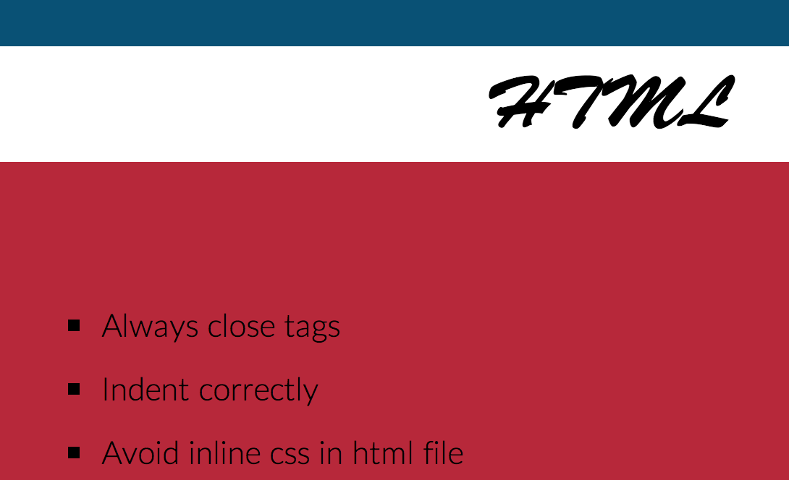
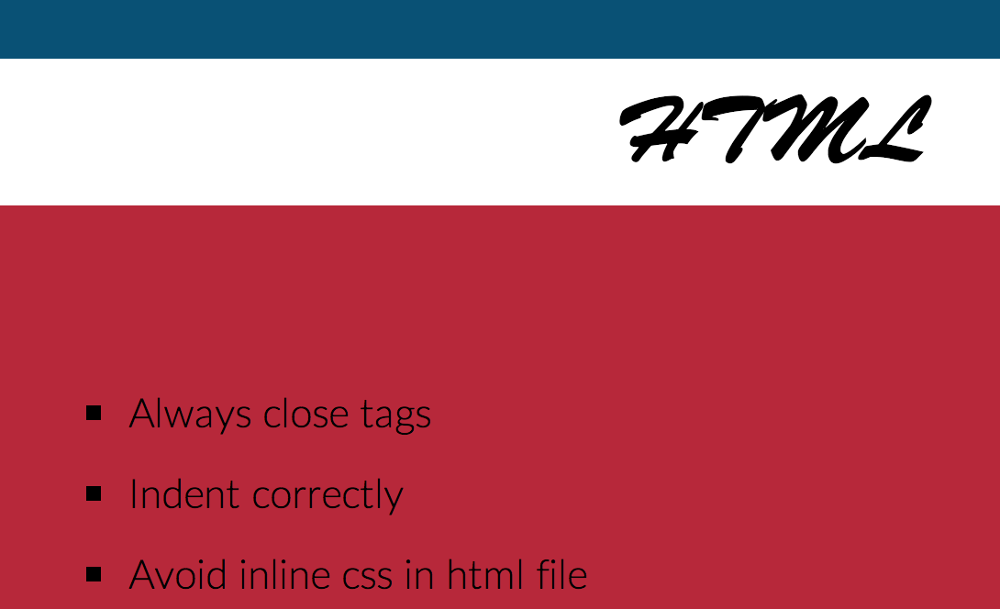

Web Design Checklist
This is a handy checklist that I use for every project, and I add to it/edit it as my knowledge increases and I gain more knowledge.
My checklist is an ever-evolving one and reflects my current state of design knowledge as well as clean, concise code. Feel free to leave feedback or suggest an addition on my Github repo.
This was a project done during my time as a student at The Iron Yard, but it has become a tool that I will take with me forever
Technologies Used:
- HTML
- CSS (Sass)
- Adobe Illustrator
- jQuery
 
